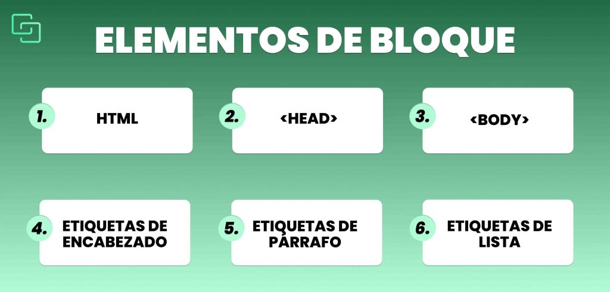

¿Qué son los elementos?
Es un patrón de elementos y otros términos que indican al navegador qué elementos HTML se seleccionan para aplicarles una regla que incluye los valores de las propiedades CSS. El elemento o los elementos seleccionados por el selector se denominan sujeto del selector.
Un elemento de bloque HTML es aquel que ocupa todo el ancho de la página o del elemento que lo contiene. Aunque sólo pongas una palabra dentro del elemento, ésta ocupará todo el ancho que tiene disponible. En el siguiente ejemplo, puedes ver que el elemento ha sido coloreado; aunque sólo una parte tiene realmente texto, el tono azul va de un extremo de la imagen al otro.
Como los elementos de bloque ocupan todo el ancho de la página, suelen agruparse uno sobre otro:
Un elemento en línea HTML solo ocupa el ancho de su contenido.

Algunos elementos:
